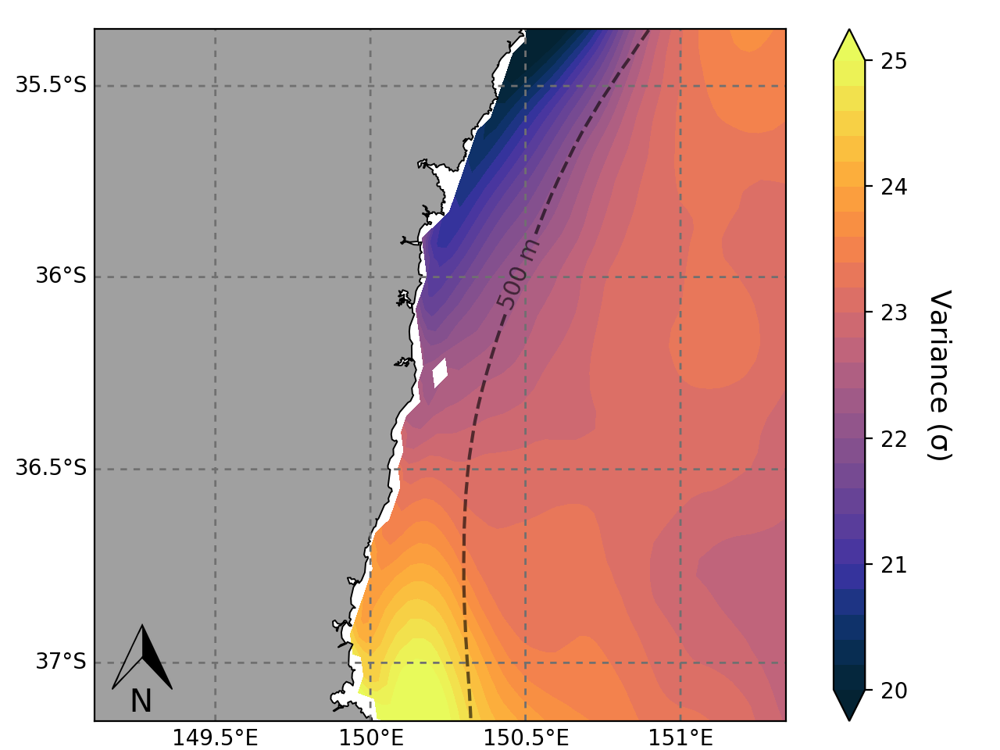
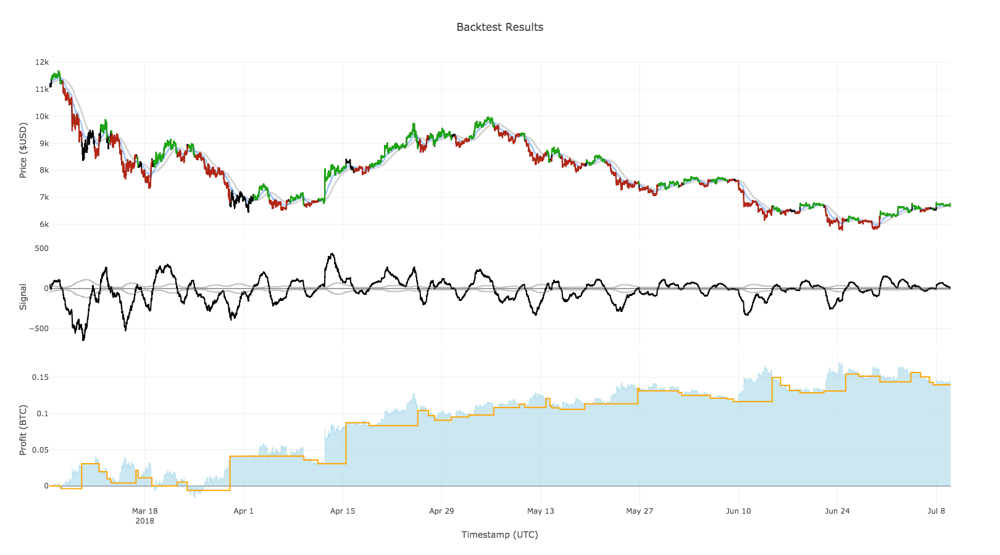

Oceanic Variance

Machine learning classification of ocean currents
Animation of machine learning output
Environmental density plots
Study region plot
3D ocean bathymetry
Webapp stock corrleation matrix generator
Visit asxcorrelations.com for a live demo
Bitcoin trading bot backtest (fully interactive using Plotly)

Extremely high resolution SST map derived from Landsat sattelite imagery
(decreased pixel range).png)
3D grid of estuarine system bathymetry
Plant growth under different soil types
Oceanic paramaters
Marine predator behavioural state transitional probabilities (using hidden Markov models)